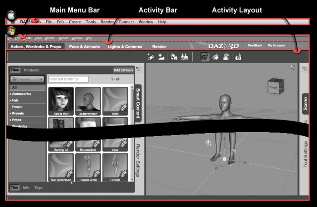
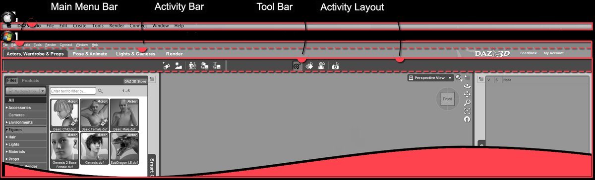
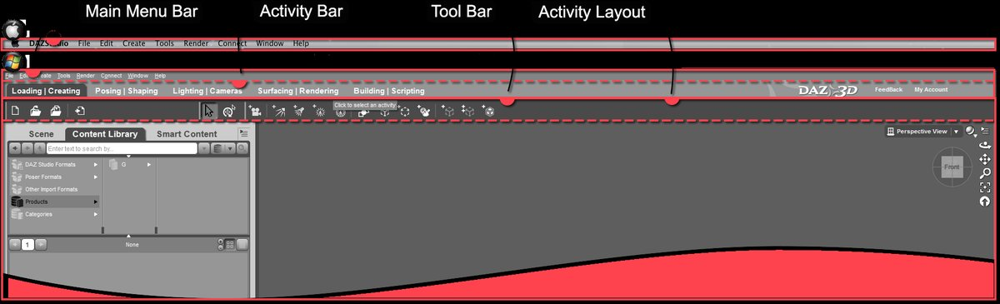
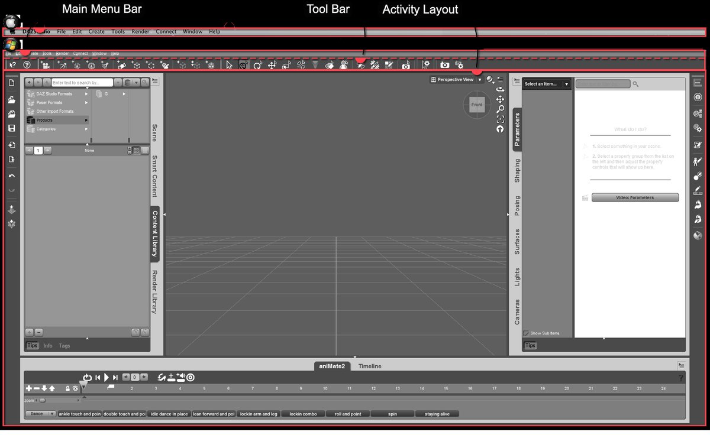
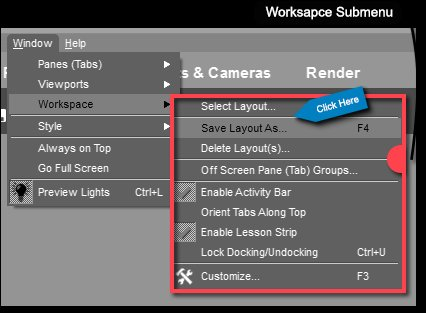
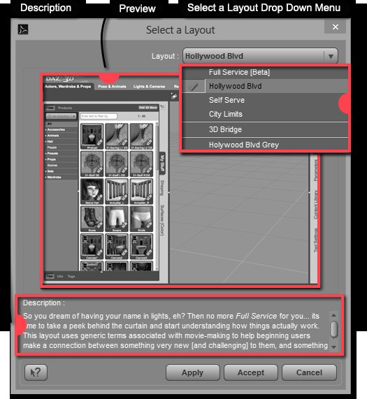
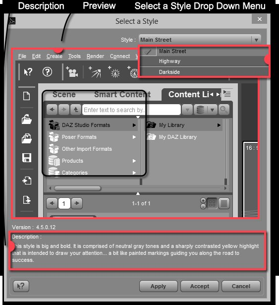
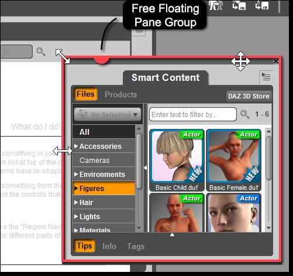
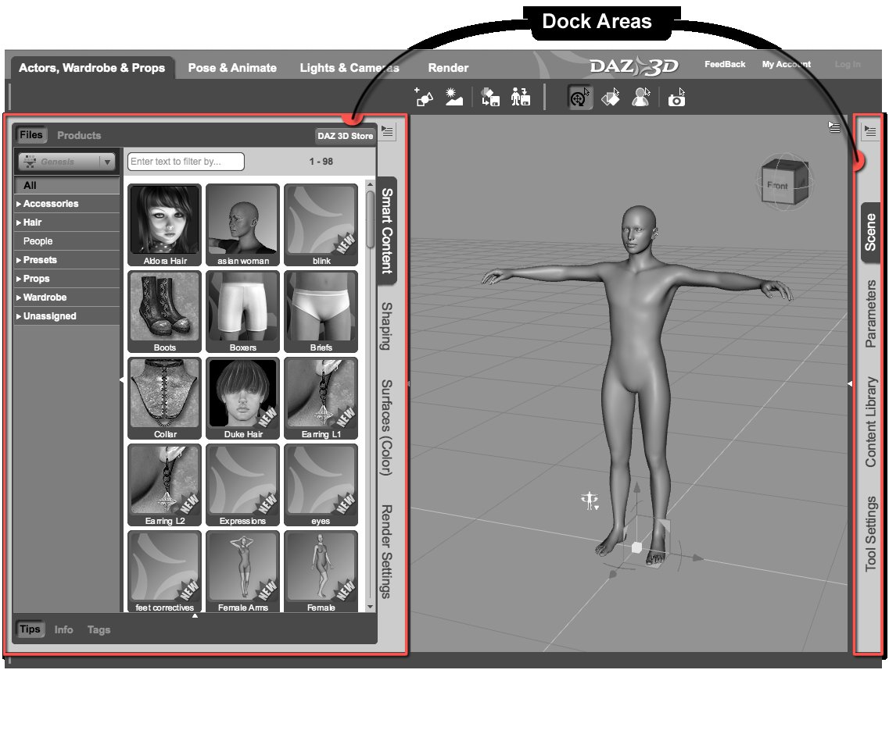
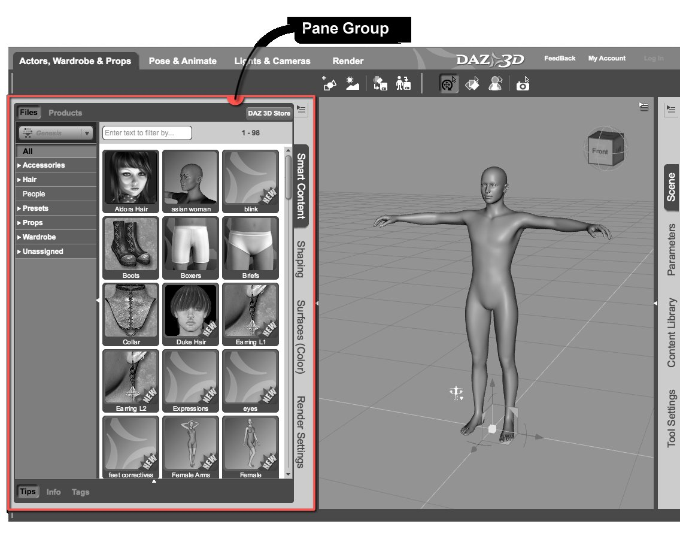

មេរៀន៖ ការប្ដូរ Layout និង Interface Style
បកប្រែពី៖ Navigating the Interface និង User Guide PDF · រូបភាពទាំងអស់ពីឯកសារផ្លូវការ DAZ 3D
Daz Studio ភ្ជាប់មកជាមួយ Interface Layouts ៤ និង Interface Styles ៣។ មេរៀននេះបង្ហាញពីរបៀប ប្ដូរ រក្សាទុក និងបត់បែន វាតាមលំហូរការងាររបស់អ្នក។


ផ្នែកសំខាន់ៗទាំង ៣៖ Main Menu Bar · Activity Bar · Activity Layout
Layouts ទាំង ៤
Layout |
សម្រាប់អ្នកណា / លក្ខណៈ |
|---|---|
Full Service [Beta] |
អ្នកថ្មីទាំងស្រុង — ណែនាំតាមជំហាន ការពារកំហុសទូទៅ · ចំណុចប្រទាក់ត្រូវបានចាក់សោ (មិនអាចបត់បែន) |
Hollywood Blvd (លំនាំដើម) |
អ្នកដែលធ្លាប់ Render មកខ្លះ — Activities ត្រូវបានបង្រួម ផ្ដល់ការគ្រប់គ្រងច្រើនជាង · មគ្គុទ្ទេសក៍ទាំងអស់ផ្អែកលើ layout នេះ |
Self Serve |
កម្រិតមធ្យម — Activities បង្រួម + Toolbars ដែលបត់បែនបានតាម Activity |
City Limits |
អ្នកជំនាញ — គ្មាន Activity Tabs ទេ ឧបករណ៍ទាំងអស់នៅចុងម្រាមដៃ + Timeline និងឧបករណ៍បង្កើតមាតិកា |


Hollywood Blvd — Activities ៤ (Actors, Wardrobe & Props · Pose & Animate · Lights & Cameras · Render)


Full Service [Beta] — Activities ច្រើនជាង ណែនាំតាមលំដាប់ជំហាន (Loading → Creating → Posing → ... → Editing)


City Limits — គ្មាន Activity Tabs · Toolbars ពេញលេញ + Timeline សម្រាប់ animation
របៀបប្ដូរ Layout
ចូលម៉ឺនុយ Window > Workspace > Select Layout…

ម៉ឺនុយ Workspace — ជ្រើស «Select Layout…»
ផ្ទាំងសន្ទនា «Select a Layout» នឹងលេចឡើង — ជ្រើស layout ពីម៉ឺនុយធ្លាក់ចុះ (មានបង្ហាញការពណ៌នាខ្លីសម្រាប់ layout នីមួយៗនៅផ្នែក Description)

ផ្ទាំងសន្ទនា Select a Layout — ជ្រើស layout រួចចុច Apply (មើលជាមុន) ឬ Accept (យក + បិទ)
ចុច Accept — ចំណុចប្រទាក់ទាំងមូលនឹងប្ដូរទៅ layout ថ្មីភ្លាម


Tip
មគ្គុទ្ទេសក៍ទាំងអស់ក្នុងគេហទំព័រនេះប្រើ layout Hollywood Blvd — បើអ្នកកំពុងអនុវត្តតាម សូមប្រាកដថាវាត្រូវបានជ្រើស។
រក្សាទុក Layout ផ្ទាល់ខ្លួន
បើអ្នកបានរៀបចំផ្ទាំង/ឧបករណ៍បានដូចចិត្ត
Window > Workspace > Save Layout As… ឬចុចគ្រាប់ F4 (ផ្លូវកាត់លំនាំដើម)
ដាក់ឈ្មោះ → layout នឹងលេចក្នុងផ្ទាំងសន្ទនា «Select a Layout» សម្រាប់ពេលក្រោយ
បើមិនពេញចិត្តនឹងការប្ដូរ → ជ្រើស layout លំនាំដើម ឬ layout ដែលរក្សាទុកពីមុនវិញបានគ្រប់ពេល
Interface Styles ទាំង ៣ (រូបរាងពណ៌)
Style |
លក្ខណៈ |
|---|---|
Main Street (លំនាំដើម) |
រូបភាពតំណាង និងអក្សរ ធំ · ពណ៌ប្ផេះស្រាល + highlights ទឹកក្រូច |
Highway |
ពណ៌ដូច Main Street ប៉ុន្តែ icon/អក្សរ តូចជាង — សន្សំកន្លែងអេក្រង់ |
Darkside |
ងងឹត — ប្រផេះចាស់ + highlights លឿងចាស់ · គែមតឹងរ៉ឹង សន្សំកន្លែងអេក្រង់ |
របៀបប្ដូរ Style៖ Window > Style > Select Style… → ជ្រើសពីម៉ឺនុយធ្លាក់ចុះ (ជ្រុងខាងលើស្ដាំ) → Apply ដើម្បីមើលជាមុន ឬ Accept ដើម្បីយក។ បត់បែនពណ៌បានតាម Window > Style > Customize Colors…


ផ្ទាំងសន្ទនា Select a Style — មើលជាមុនដោយ Apply ឬយកដោយ Accept
រៀបចំផ្ទាំង (Panes) ដោយខ្លួនឯង
ចំណុចប្រទាក់ Daz Studio អាចបត់បែនបានទាំងស្រុង — អ្នកអាច dock ផ្ទាំង និង Toolbars នៅស្ទើរគ្រប់កន្លែង៖
ផ្លាស់ទីផ្ទាំង — ចុចឆវេងសង្កត់លើ tab របស់ផ្ទាំង រួចអូស។ អូសទៅកណ្ដាល Viewport → វាក្លាយជា Pane Group អណ្ដែតសេរី

Pane Group អណ្ដែតសេរី — ព្រួញទ្វេ = ប្ដូរទំហំ · ព្រួញបួន = ផ្លាស់ទី
Dock ផ្ទាំង — អូសទៅជិតគែម Main Window → «Docking Area» នឹងលេចពណ៌បញ្ជាក់កន្លែង

Docking Areas (ឆ្វេង ស្ដាំ លើ ក្រោម) — រូបភាពពីឯកសារផ្លូវការ DAZ 3D
បន្ថែមផ្ទាំងថ្មី — Window > Pane (Tabs) រួចជ្រើសផ្ទាំងដែលចង់បើក (ឬចុចស្ដាំលើផ្នែកទទេនៃ group → Add Pane (Tab))

រចនាសម្ព័ន្ធ Pane Group និងរបៀបបន្ថែមផ្ទាំង — រូបភាពពីឯកសារផ្លូវការ DAZ 3D


Tip
សម្រាប់ព័ត៌មានលម្អិតអំពីផ្ទាំងសំខាន់ៗទាំង ៥ (Smart Content, Content Library, Scene, Parameters, Surfaces) សូមមើល ជំពូក ១។